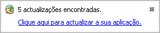
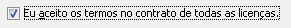

Atualizações do Trancestris
Que métodos para atualizar o Trancestris? :
O Trancestris, pode, por si próprio, atualizar-se automaticamente ou manualmente.
É sua a decisão.
Quando inicia o Trancestris, poderá ver, no canto inferior direito, uma mensagem de aviso,
que o informa que há atualizações disponíveis para o próprio
programa. Significa que o Trancestris foi melhorado, foram corrigidos erros, etc. e novas
modificações estão disponíveis.

Clique na linha azul “Clique aqui para atualizar a sua
aplicação”, e o processo é iniciado.
Outra forma de procurar atualizações é através do menu principal
“Ajuda” - “Verificar atualizações”.

O processo de atualização :
A primeira janela dá-lhe informação sobre as secções do programa que
serão atualizadas.

Aqui pode ver que há 5 módulos para atualizar: a aplicação, os editores, os
exploradores, os recursos e a sugestão do dia.
Clique em “Seguinte”.

Aqui tem de aceitar as licenças associadas ao programa.

Marque a caixa ”Eu aceito os termos no contrato de todas as licenças.”.
Uma janela de aviso. Diz-lhe que estas extensões não estão assinadas. Não se
preocupe, é só porque não queremos assinar todos os módulos disponíveis,
uma vez que eles só estão disponíveis no nosso site. Assim, ninguém está
autorizado a distribuir pacotes do Ancestris e do Trancestris.

Agora as extensões foram atualizadas, mas para as instalar, tem de reiniciar a aplicação.
Clique em “Terminar“. O programa reinicia sozinho.